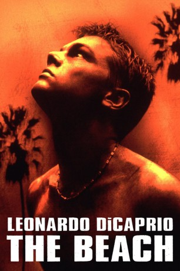
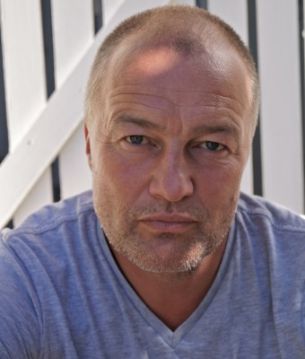

#4097 The Beach
 gesehen am 30.08.2016
gesehen am 30.08.2016
 
 IMDB-Wertung: 6.6 / 10
IMDB-Wertung: 6.6 / 10  Metascore: 0
Metascore: 0 
Der junge Amerikaner Richard kommt nach Thailand, um das große Abenteuer zu entdecken. Von einer duchgeknallten Engländerin erfährt er von einer geheimen Insel, einem entlegene, völlig unbekannten Strand: das Paradies. Mit einer handgezeichneten Karte machen sich Richard und das französische Pärchen Francoise und Etienne auf den Weg, diesen fabelhaften Ort zu finden. Nach zahllosen Abenteuern und Gefahren gelangen sie tatsächlich auf die Insel, doch auf der Anhöhe eines Wasserfalls ist der Weg zu Ende. Sie wagen den Sprung in die Tiefe und ahnen nicht, daß es der Beginn einer Reise ins Herz der Finsternis ist…
Jahr: 2000
Dauer: 114 Minuten
FSK: 16
Land: USA Studio: 20th Century Fox Home EntertainmentTonspuren: DD2.0 - ,
Untertitel:
Auflösung: 1080p (1920x800) Größe: 5427 MB
Genre: Abenteuer, Drama, Liebe, Thriller
Regisseur:  Danny Boyle
Danny Boyle
Drehbuch: James Dearden
Soundtrack:
Darsteller:
 Leonardo DiCaprio als Richard
Leonardo DiCaprio als Richard- Virginie Ledoyen als Françoise
 Guillaume Canet als Étienne
Guillaume Canet als Étienne- Robert Carlyle als Daffy
- Peter Youngblood Hills als Zeph
- Paterson Joseph als Keaty
- Zelda Tinska als Sonja
- Victoria Smurfit als Weathergirl
- Daniel Caltagirone als Unhygenix
- Peter Gevisser als Gregorio
-  Lars Arentz-Hansen als Bugs
 Tilda Swinton als Sal
Tilda Swinton als Sal- Hélène de Fougerolles als Beach Community Member
- Bindu De Stoppani als Beach Community Member
- Stacy Hart als Beach Community Member
- Saskia Mulder als Hilda
- Espérance Pham Thai Lan als Réceptioniste, serveuse du Cybercafé , uncredited
- Daniel York als Hustler
- Patcharawan Patarakijjanon als Hotel Receptionist
- Somboon Phutaroth als Cleaning Woman
- Weeratham 'Norman' Wichairaksakui als Detective
- Jak Boon als Travel Agent
- Jerry Swindall als Sammy
- Krongthong Thampradith als Woman with Key
- Apichart Chusakul als Senior Farmer
- Sanya 'Gai' Cheunjit als Farmer
- Kaneung 'Nueng' Kenia als Farmer
- Somchai Santitharangkun als Farmer
- Seng Kawee als Farmer
- Somkuan 'Kuan' Siroon als Farmer
- Lidija Zovkic als Mirjana
- Samuel Gough als Guitarman
- Staffan Kihlbom als Christo
- Jukka Hiltunen als Karl
- Magnus Lindgren als Sten
- Myriam Acharki als Beach Community Member
- Andrew Carmichael als Beach Community Member
- Josh Cole als Beach Community Member
- Nina Jacques als Beach Community Member
- Sheridan Jones als Beach Community Member
- Gunilla Karlson als Beach Community Member
- Sian Martin als Beach Community Member
- Isabella Seibert als Beach Community Member
- Elizabeth Thomas als Beach Community Member
- Michael Thorpe als Beach Community Member
- Timothy Webster als Beach Community Member
- Ramon Woolfe als Beach Community Member
- Simone Huber als Eva
- Raweeporn 'Non' Srimonju als Sumet
- Irmelin DiCaprio als Woman in Bar , uncredited
Datei: X:\2000\Beach, The (2000, FSK16, 1920x800).mkv seit 20.07.2016
Festplatte: HD 1996-2002
 Es gibt insgesamt 82 Filme in der Gruppe '2000'
Es gibt insgesamt 82 Filme in der Gruppe '2000'